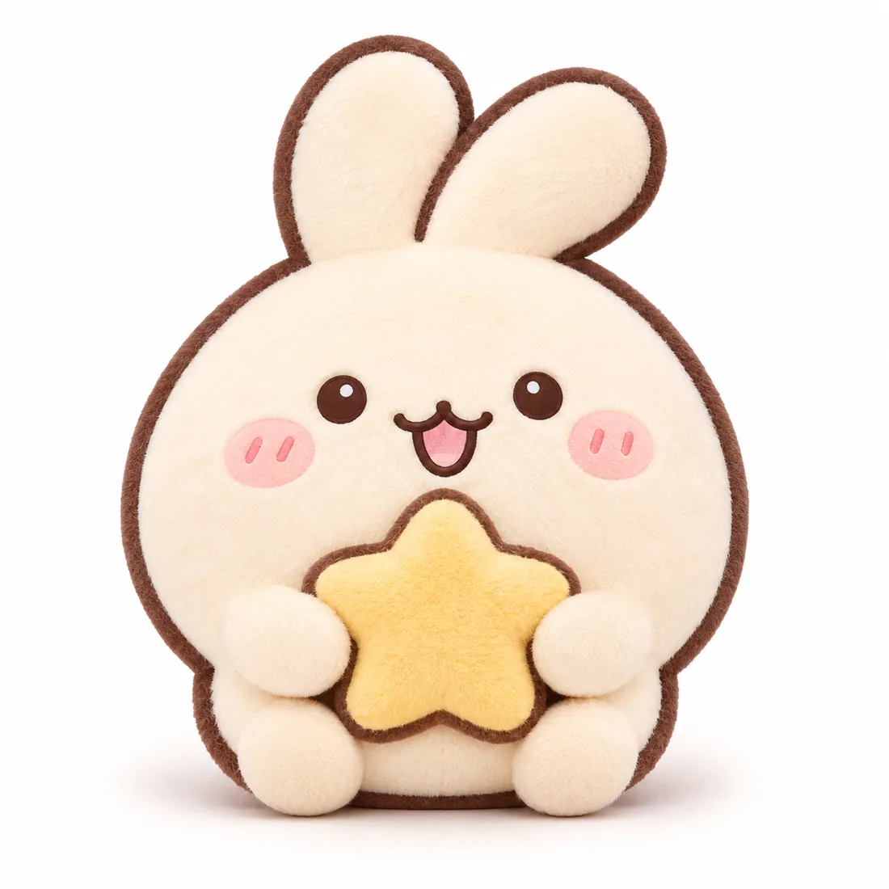
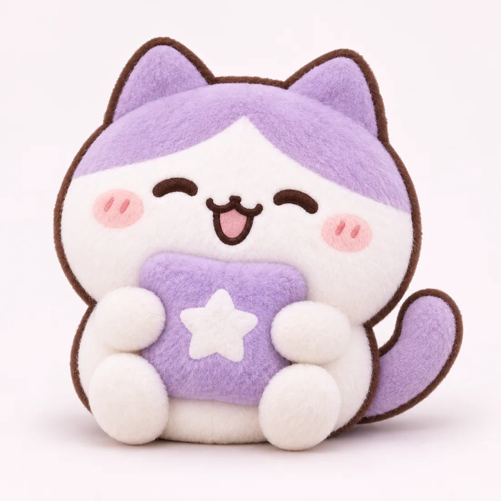

A little journal for your favorites
좋아하는 마음을
차곡차곡 기록하다.
굿즈와 최애를 기록하는 앱, 디스푸레.
앱을 만드는 이야기부터 실제 활용 방법까지, 이곳에 하나씩 쌓아갑니다.
이번 주의 이야기
EDITOR'S PICK 01굿즈 컬렉션 · 시연 준비토토와 네코의
토토와 네코의
작은 굿즈 수집기
봉제인형과 아크릴 굿즈부터 포토카드까지. 두 캐릭터의 굿즈 10종으로 디스푸레 컬렉션을 준비하는 이야기를 소개합니다.
이야기 읽기 ↗

추천 콘텐츠
전체 이야기 보기 ↗EXPLORE BY TOPIC
관심 있는 이야기부터
좋아하는 것을 수집하고, 기록하고, 꾸미는 여러 가지 방법.